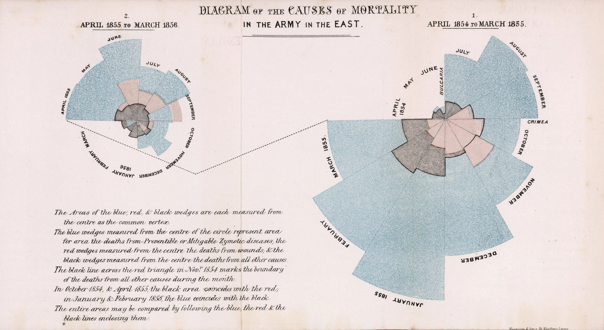
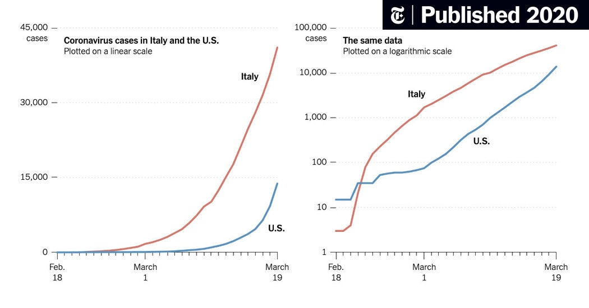
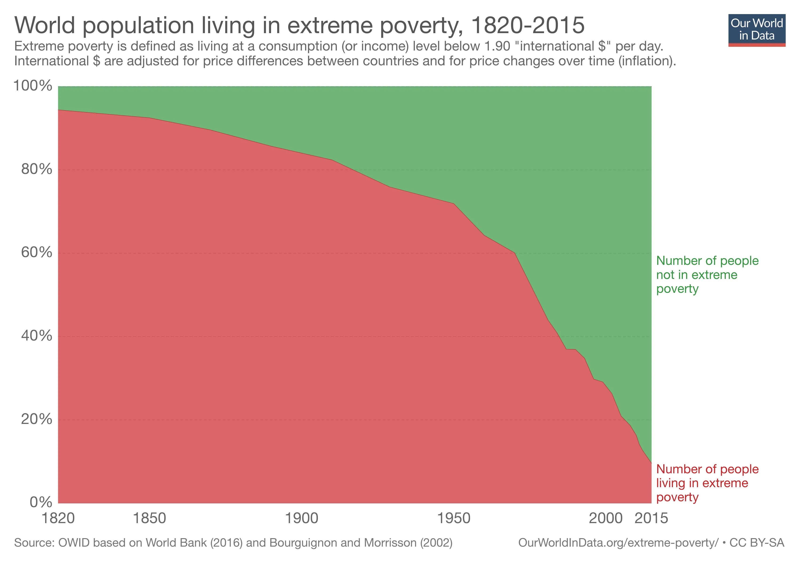
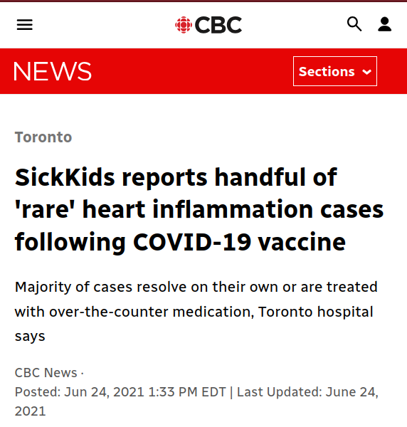
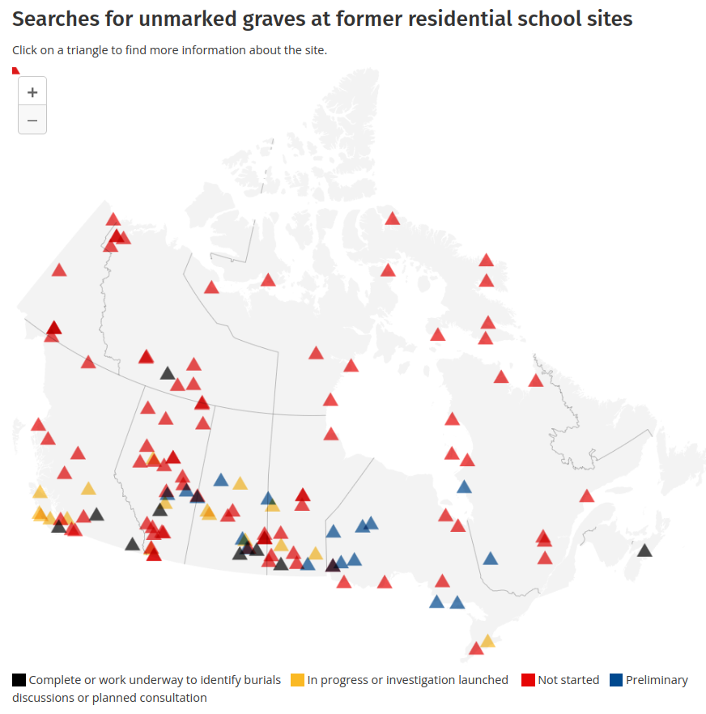

Subjectivity and objectivity in data
📥 Click here to download this document and any associated data and images
Introduction: The Illusion of Neutrality
Florence Nightingale arrived as a nurse in late 1854 during the Crimean War. She had heard of the death tolls and unsanitary conditions but was still appalled by what she saw. Her meticulous records revealed disease mortality rates higher than recent plagues, yet when she returned to England in 1856, her detailed tables drew little attention. With the support of chief statistician William Farr, she designed her now-famous illustration showing that preventable disease killed more soldiers than combat, helping to push for sanitary reforms.

We often hear that “data speaks for itself,” but all of us have been swayed by a striking graphic or shocking number far more than the drab table behind it. These impressions are always shaped by human choices - collection, classification, analysis, visualization, dissemination. Each stage involves forks in the road: some personal (axis scales, colours), others systemic (whose lives are counted, and whose aren’t). Nightingale, for instance, placed preventable disease deaths (in blue) on the outermost ring of her diagram - where circumference was the greatest. The data didn’t change, but the argument became more forceful.
The way we shape and wield data matters. The same figures can support opposing claims. That’s why rigour and context are essential whenever we encounter data.
Visual Tricks and Misleading Mathematics
Design and Scales
Even the simplest graph involves choices: where the axes begin and end, what scale is used, what colours or chart type. These decisions can clarify as much as obscure.

Source: New York Times.
During COVID-19, some jurisdictions plotted cases on a linear scale, others on a logarithmic one. The very same numbers could suggest either that “the curve is flattening” or that cases were still rising rapidly. Researchers found laypeople had difficulty judging severity on logarithmic charts. While such charts did show the rate of change, the choice of scale also had political consequences: one reading heightened alarm, the other downplayed urgency.
It’s always important to consider the audience of different works and what context they’ll bring. Sometimes, this might mean additional annotation on a graph, while other times, it means using a different scale more suited to a technical audience.
Measures and Statistics
We’ve all seen it: a politician touts a statistic, a headline trumpets a finding, only for it to crumble under closer scrutiny. What counts as an “average,” a “percentage,” or a “rate” depends heavily on what’s included, what’s excluded, and how it’s calculated.
Take income. If ten people are in a room, one with a million dollars and the rest with nothing, the average wealth is $100,000. A number that says little about inequality.

Source: Vox, via Our World In Data.
In a case from a few years back, researchers from Our World in Data published a graph showing extreme poverty declining since the 1800s. The narrative was that modernity lifted billions out of destitution. But what counts as “extreme poverty”? As Sullivan & Hickel (2023) argued, the World Bank’s $1.90/day threshold fails to capture whether basic needs like food, clothing, shelter are met. Using broader definitions and looking back a few hundred years, many people had their needs met, and “extreme poverty” was not the universal norm. Instead, colonialism, privatization, enslavement, and dispossession created poverty crises and maintained them. It was thanks to progressive social movements in the 20th century that social welfare was expanded.
The underlying methods matter. Small definitional tweaks can reverse entire conclusions.
Human Bias and Cognitive Lenses
Humans never approach data neutrally. We bring prior beliefs, cultural assumptions, and mental shortcuts. Psychologists call these “cognitive biases,” and they shape how we interpret numbers, charts, and maps.

Source: CBC.
During COVID-19, headlines about rare vaccine side effects fed confirmation bias: the tendency to embrace evidence that fits our beliefs. For skeptics, one story of myocarditis outweighed mountains of safety data.
Other shortcuts work more subtly. The availability heuristic means vivid outliers lodge in memory more than steady trends. A single dramatic case can overshadow the weight of a distribution.
Source: Tableau.
Visualization design interacts with these tendencies. Take maps: the Mercator projection inflates northern regions and shrinks equatorial ones, reinforcing a Eurocentric worldview. The Peters projection restores area proportionality but stretches continents unnaturally. Neither is strictly wrong, but both shape assumptions about importance and power.
Ultimately, data never erases bias but interacts with it. Our job is to make choices which will inevitably be guided by our habits. It doesn’t mean we have to abandon data, but we should always ask how it will be perceived.
Political Pressures and Manufactured Objectivity
Structural Factors
Every dataset is embedded in institutions - governments, universities, corporations, militaries - each with histories, resources, and incentives shaping what is measured.
Source: Library and Archives Canada.
In Canada, mapping land was also a tool for dispossession. Surveys of the late 1800s and early 1900s parceled “vacant” land for settlers while ignoring Indigenous ownership. “Indigenous land” was not considered a real category in official data, aligning with policies that erased Indigenous presence.

Source: CBC.
What’s omitted matters too. The deaths of Indigenous children in residential schools went largely unrecorded. For decades, these children were absent from official data, their lives excluded from the statistical ledger. Even now, unmarked graves remain undocumented, showing how structural choices about data reinforce whose lives are counted as worthy.
It might have been the case that select individuals disagreed with these methods and saw racism for what it was. But in a system, these decisions are already made and passed down. It’s not so much about being purist or always right, but when we think about the data we obtain and how its structured, we also have to ask who is discounted, and whether there’s an opportunity to change that inside or outside a given system.
Media and Narratives
Media narratives are key when we think about data: what is said, and what is left unsaid, sets the frame through which the public interprets numbers. It’s easy to point to a couple of cranks or fringe media outlets for peddling “disinformation”, but this ignores the systemic way in which certain narratives about data are privileged.
In their seminal book Manufacturing Consent, Edward Herman and Noam Chomsky demonstrated how media doesn’t simply report facts, but selects, emphasizes, and omits them according to structural pressures like ownership, advertising, and political influence. A stark illustration comes from their comparison of the extensive U.S. media coverage of the Cambodian genocide with the near silence on the simultaneous genocide in East Timor in the 1970s. It’s an example that reveals how global power interests shape the very visibility of data and human suffering.
Closer to home, Canadian outlets reveal similar patterns. For instance, the Toronto Star and other major outlets have echoed police narratives to frame stories about crime waves on public transit, despite evidence of typical or declining crime rates overall. By privileging official police narratives, newspapers can end up amplifying public fear while sidelining discussions of over-policing in marginalized communities and inadequate funding for public services.
Conclusion: Data is just another tool
Data storytelling and visualization are powerful, but no more neutral than a speech or editorial. It matters how data is presented, where it came from, and whose ends it serves. Transparency and nuance are key; we should treat data lacking both with skepticism.
Still, it’d be a mistake to take the outline of this chapter as a checklist for objectivity. Even careful tweaks can’t erase the structural contexts shaping what we measure and how we show it - those structures must be confronted on their own terms. Data is one tool among many for doing so.